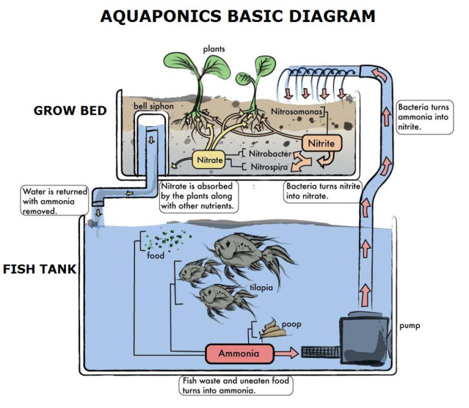
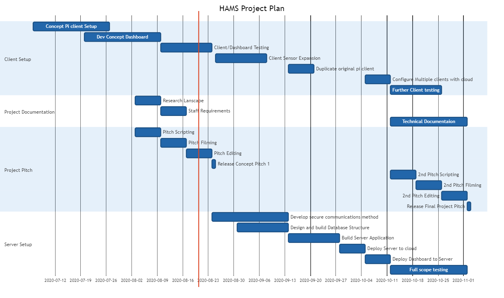

Project Plan
Overview
Our project is to build to develop an affordable, scalable aquaponics monitoring and automation solution for back yard hobbyists. This product will delivered as a cloud platform, known as HAMS (Home Aquaponics Monitoring System), with the long term goal of native mobile to be integrated into the system. It will involve client devices reporting back to a cloud service, allowing easy monitoring of environment variables and a customisable alerting system Large scale automated systems exist for commercial aqua farming but the cost of these solutions make them unviable for the backyard farmer. Conversely, "do it yourself" style projects for monitoring and automating home aquariums also exist, typically using a Raspberry Pi or Arduino board and other consumer electronics to measure different environment factors and present this information on a web-based dashboard. We intend to expand on this idea, targeting environment variables that are core to combining aqua culture and hydroponics, either in a single back yard system or for multiple units on a larger property.
Motivation
Two of the biggest issues in the world today are food security and climate change. Both these issues are significantly related. As land is cleared for farming, the balance of nature is upset. Crops of plants absorb significantly less carbon dioxide from the atmosphere than the forests that preceded them. Additionally, rainfall is effected by the clearing of forests, resulting in extended droughts in some areas. Traditional plant farming requires lots of water, with additional chemicals used for various reasons, this water tends to run out into local river systems along with trace chemicals causing further issues. As our population increases more food is required, further increasing the need for farming and agriculture. Aquaponics is a resource efficient method of growing food, requiring less water than traditional farming, and the symbiotic relationship between the plants and sh results in less chemical additions, such as is the case with separate hydroponics and aquaculture methods. We hope that this project will allow enthusiasts an easy way to understand what is going on with their backyard hobby aquaponics. Even if this project does not result in a financially viable product for home aquaponics use, we have specifically chosen to use technologies that are in common use in the IT industry right now. Some are mature, while others relativity new to the IT industry. This way, as a group we will give ourselves exposure to technology that future employers may be interested in and even use it as a demonstration of our ability
Landscape
Currently the market for aquaponics monitoring systems has limited solutions for smaller operations, however the market is starting to expand in recent years to accommodate the increased popularity of the agriculture technique. Even more so, aquaponics enthusiasts starting out have limited affordable options available to them. Companies such as Bluelab and GroLine have monitoring systems available, with prices usually being $500 or more for a basic model with pH and temperature gauges, with limited customizability to the user experience and how data is accessed/stored. Some high end device models have the ability to send your data to a computer or email, however this comes at an increased cost. The monitoring system we are suggesting will provide an affordable solution for enthusiasts and small businesses who are wanting to start using aquaponics, with scalability for future expansion. Information is stored in the cloud which is accessible by the user anywhere they have an internet connection via a web browser. The addition cloud technology will allow for expansion into additional features, such as sending a notification of a temperature change to a mobile app.
Detailed Description

For this project, a home-made flood and drain aquaponics system will be used as the 'test subject'. To properly describe the scope of the project, a brief background in Aquaponics is required. Diagram A show the basic concept of how this works.
Fish are grown in a fish tank, with their waste turning into ammonia as a by-product. Water is continually being pumped into the grow bed, which is typically above the fish tank, or at least higher. The grow bed is filled with a hydroponics medium such as clay balls, which acts as a biological filter for the fish tank. The ammonia in the water is converted to nitrites and then nitrates as in a typical fish tank filter, but rather than having to regularly change the water to remove the nitrates, the plants within the grow bed absorb them as part of their natural growth.
The bell siphon ensures that once the water level in the grow bed reaches a pre-determined top level, it siphons the entire grow beds water bac into the fish tank. This ensures that the plants roots are not continually submerged, preventing rot and damage. How often the grow bed is drained is controlled by the flow of water into the grow bed.
Environment Variables
Water Temperature
A consistent water temperature is paramount for the health of sh. Increased growth rates is observed over the warmer months, though too hot a temperature (or too cold) can result in death.
Water Levels
Both Fish and Plants require water to grow, measuring the water levels will not only allow the food and drain cycle to be timed and adjusted accordingly but would also indicate a pumping failure or excess loss of water.
PH
The acidity/alkalinity of the water is also very important to ensure it is in a consistent state, both fish and plants have different PH tolerances depending on the species. Understanding the PH of the water will allow accurate decisions around what plants should be grown.

Nitrate/Nitrite
If an aquaponics systems is working and properly balanced there should be little to no nitrate within the water of the fish tank. If there is, then this would indicate that either the biological filtering of the grow bed is not working or there are not enough plants to absorb the nitrate. Excessive nitrate within the fish tank water is detrimental to fish health and needs to be monitored. Unfortunately this environment variable is one of the most difficult to measure electronically. Some investigation will have to be done to determine whether this measurement is viable. A stop gap solution is to measure this using a chemical test kit and entering the result into the system manually at regular interviews.
Sunlight
Measuring the amount of sunlight the aquaponics system receives will help in analysing growth during the different seasons.
Aims
The aim of this project will be to produce multiple client devices that record environment variables at regular intervals and communicate these to a cloud based service, with a web based dashboard to review this information. We will use Raspberry Pi's as our client devices and IaaS provider such as Amazon Web Service to host cloud the cloud infrastructure required. This project can be broken up into several smaller aims, which are listed in approximate order.
Concept Pi Client
Firstly a single stand alone client device will be created, measuring only one variable, water temperature. Temperature sensors are incredibly cheap and easy to obtain to get started and documentation on how to get these working is easy to find. This will host a local web service simply displaying the temperature history
Concept Dashboard
A concept dashboard can be developed independently of the pi client. This will not only allow us to envision what the end product will look like, but serve as a base for the cloud based platform once built. As RRDTool created graphs are static PNG images generated by RRD Tool itself, we will investigate using an additional library called Chart.js to create real time HTML graphs on our dashboard
Project Documentation and Research
Throughout the project there is research and documentation required for several reasons. In order to properly market our project we need to ensure that we are across any other competitive or similar products. We will also need to completely understand what technical resources and knowledge we require, including possible staff that may be required if this project does get picked up by an investor and turned into more than a proof of concept. Additionally some technical documentation detailing how the client devices are to be set up and how the system is to be used will need to be created
Initial Concept Pitch
An initial concept pitch will be created which not only marks the first major milestone in the project, but can also be used to show case what we are intending on developing to potential investors. This will briefly detail our motivation for starting the project and what we intend to achieve in the short term. By the time we get to finalising this Initial concept Pitch, we will have a client concept demonstration, pending any unforeseen hurdles we will be able to move forward with developing the cloud based system.
Client Sensor Expansion/Client Duplication
With the original concept raspberry pi completed and tested we will then add further sensors such as water depth, ph, and if financially viable ammonia, and nitrate sensors. Though we do foresee that these will need to be manually entered environment variables into the dashboard for our first release.
It should now be fairly straight forward to duplicate the client for multiple Aquaponics systems, which can be configured to communicate with the cloud platform later
Cloud Setup
Communications Method
A secure communications method will need to be implemented or developed to ensure that data between the cloud and the client devices is encrypted. Environment variables of Aquaponics is not necessarily highly valuable data, but in today's world it is imperative that any Cloud or IoT type device is secured to protect against intrusion. We could develop our own client/server based comms method but in the time we have allocated it may be better to use the socket based communications method that RRDtool has built in, but tunnelled over an encrypted SSH connection.
Database Structure
A Simple database structure to store users data such as their login credentials, and their aquaponics systems setups will need to be created for the backend server application to interact with.
Server Application
A backend server application will be written in order to provide an application programming interface (API) to the front end dashboard for retrieval of information for display to the user. This will take care of database interaction and requesting environment variables in real time from the round robin databases to be fed into the real time graphs on the front end dashboard. Building the project with a backend application architecture, will ensure easy interoperability with native mobile applications in the future.
Cloud Deployment
Actual deployment of both the backend server application and the frontend dashboard to the cloud is a task on its own. Although IaaS services such as AWS make claims of being able to bring services online within minutes, we will need time to learn the toolset and be comfortable that we have a cloud based solution that not only works but is stable and supportable.
Testing
Currently, we have a functional mock-up of a client device that is able to log temperature results gathered from a functional aquaponics system, which is then able to be accessed from a developer dashboard. The existing client device and dashboard will be tested and refined over the span of the next two weeks, during which the server environment will begin development of secure communication methods and database structures. Following this testing, there are several weeks which will focus on additional server development and replication of the Pi Client device.
Once the server application has been deployed to the cloud server, multiple Pi clients are able to be configured to interface with the server application. Once this has been completed we are able to perform full scope testing and further client testing. The desired outcome is that multiple clients are able to log and retrieve their data, with the data reflecting correct temperature results. As the release client device will only feature temperature readings, the initial test group can be aquarium owners and aquatic enthusiasts.
Risks
With the commencement of any project comes the possibility that many things could go wrong, however with the proper risk management processes these risks can be mitigated, with the intention of removing them completely.
Our project includes electronics interfacing with a water source, setting us with the task of ensuring a reliable product while also having a minimalistic design. There are a couple of components that are submerged in water with the potential of 99% of that components lifespan being spent submerged in water.
As our project will rely on cloud computing a lot of planning will need to go into the implementation of the cloud service. For the initial deployment project we will be looking into IaaS to provide the cloud infrastructure as it would be cost effective and provide more reliability than what could be designed in the outlined timeframe. However the toolsets would need to be learned and understood, with the ability for ongoing support and possible migration to an internally hosted cloud service. It is early in the project to completely mitigate the risks involved in the cloud functionality, however as the project continues to develop it is vital that it is considered in each major step.
A major risk present within our project is a disruption of service. This is a potential risk due to the fact all data is sent to the central server to be processed and logged. If this data is not received by the server, or logged correctly, the end user could face issues with loss of data and potentially having their aquaponics system fail from not receiving a vital notification. To combat this, a custom communications server will be built which will allow for customisable redundancy methods

Final Project Pitch
Once we have our project finished and tested, we will want another pitch video in order to attract investors. This will focus more on the cloud based infrastructure and ability to scale the product as a possible subscription based service. This is where we will propose native mobile apps, which our backend API will already be ready for. Chart A shows 16 week project plan, detailing the time frame for each of the above mentioned tasks, not that several of these tasks are dependant of each other and will push forward the time frame if the prior task runs over.
Scopes and Limits
The first milestone is at week six of the project. At this stage we will have a single client device measuring temperature and possibly water depth, logging these readings to a round robin database to have graphs generated regularly, and displayed on a single demonstration web site. We will also have a a concept dashboard for the cloud based login created which will demonstrate the end goal.
This project will be completed at the end of sixteen weeks, which is the second and final milestone. We will have multiple client devices communicating their data to the cloud service, to be displayed using the dashboard design from the first milestone.
The use of certain technologies are considered outside the scope of the project and are assumed as existing knowledge. This includes network connectivity, wireless or otherwise, and administration of IaaS platforms.
Team 18 - Creative Protocol© 2020